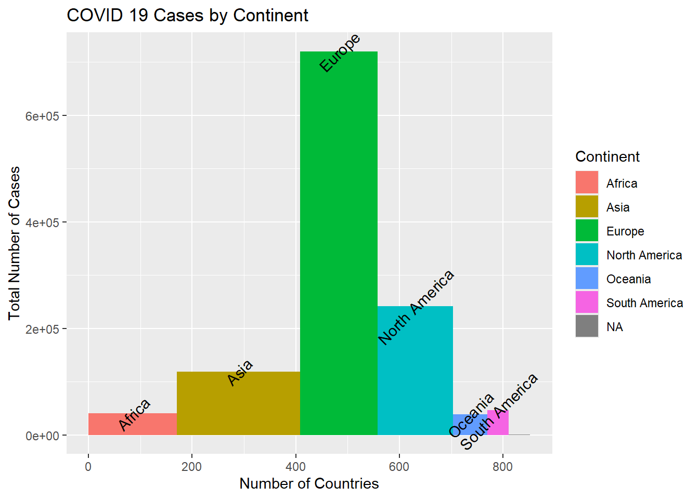
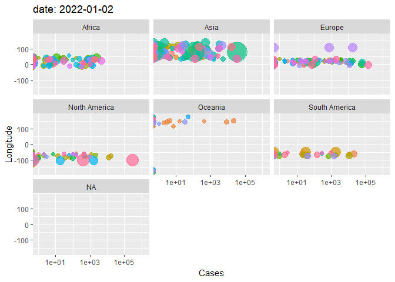

Assignment 4
Code
R
Plots
Assignment
1. Variable Width Column Chart
Here we visualize the total number of COVID cases as of 2022-01-01 per continent or region. The width in the columns represents the number of countries within the specified continent or region. The height represents the total number of cases.
2. Table with Embedded Charts
This table visualizes the relationship between longitude and COVID cases over time. Each embedded table represents a different continent or region. We were interested in representing the data this way to investigate the possible influence of climate on COVID cases.

Synergy Report
Our team diligently collaborated to create these data visualizations. Prattasha and Kaitlyn took the lead on the column chart. Bel took the lead on the animated table matrix. Leonard reviewed and merged all final codes to create our blog.